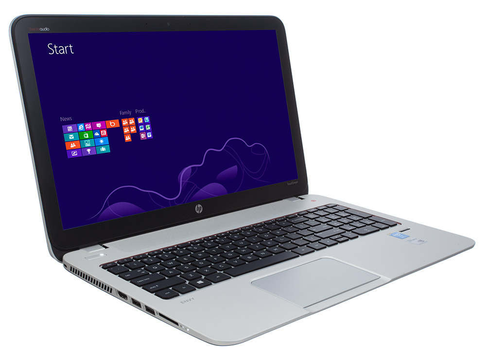

Dell XPS - Review
HP knows how to make a winner. Not only has HP redesigned the Envy 17, but it has jam-packed this $1,484 system with a slew of crowd-pleasing features. From its full 1080p display and excellent audio to its Intel Core i7 processor and AMD switchable graphics, the notebook is an undeniable multimedia powerhouse. Read on to find out why the Envy 17 is one of our new favorite big-screen laptops.
Design
Similar to its smaller cousin, the Envy 15, the Envy 17 has adopted a slick, stripped-down aesthetic. While the Envy 17's aluminum-alloy interior is MacBook Pro-like, there are enough unique characteristics to set it apart. The silver deck is accented by a brilliant red ring that borders the expansive, recessed keyboard. HP Envy 17 (2012) Beats ButtonTo the right of the keyboard sits the most unique feature of the notebook -- an analog volume dial emblazoned with a red Beats logo. Just below the dial sits a small mute button. An engraved Envy 17 insignia rests on the bottom left of the keyboard. Unlike the MacBook Pro, the Envy 17 features a black matte aluminum alloy lid. Too bad it was riddled with fingerprints and smudges within a few minutes of use. The backlit HP logo at the bottom right corner delivered just the right amount of flourish. Weighing 7.4 pounds, the 16.4 x 10.7 x 1.3 inch HP Envy 17 is on the chunky side compared to the 17-inch MacBook Pro. Apple's machine weighs just 6.6 pounds and is less than an inch thick. However, the Envy 17 is still lighter than the 8.4-pound, 16.3 x 11.3 x 1.4 - 2.3-inch Dell XPS 17. Although it's thicker, the 6.6-pound Sony VAIO F can be carried with a little less back strain.
Keyboard
HP Envy 17 (2012) KeyboardThe Envy 17's black matte island-style keyboard features a full number pad with plenty of spacing between the keys. Although we noticed a minimal amount of flex, the keyboard delivered a comfortable typing experience. We appreciated the firm, springy feedback. Backlighting takes center stage on the Envy 17, thanks to the HP Radiance Backlit Keyboard. Each key has its own LED light, allowing the user to type in dimly lit environments with ease. Controlled by the HP Proximity Sensor located in the top bezel, the keyboard turns on and off in an eye-catching waterfall effect.
Touchpad
HP Envy 17 (2012) TouchpadThe Envy 17 features a spacious 4.3 x 2.7-inch Synaptics clickpad that HP calls an Imagepad. Similar to the Envy 15, an HD sensor enables more accurate control than other clickpads on the market. The Imagepad's most notable feature is the slightly raised gray line that demarcates between the touchpad and the mouse buttons. Touch typists could be thrown off by the Imagepad's location, which isn't centered beneath the G and H keys. Multitouch gestures such as pinch-zoom, three-finger flick and three-finger press were relatively smooth and responsive. However, we experienced some choppiness when trying to execute two-finger scrolls on CNN.com and two-finger rotations on photos. Four-finger flicking was by far the most useful gesture. Flicking down instantly revealed the desktop, while an upward flick delivered a scrollable view of all our open windows in Windows Aero launcher. Flicking vertically also displayed open windows in thumbnail form in a small, manageable box. Even though we could press anywhere on the Imagepad, right and left clicks only registered on the bottom half of the pad.
Display and Audio
HP Envy 17 (2012) DisplayWatching movies on the HP Envy 17's 17.3-inch HD Radiance 1920 x 1080p display was a blast. While the 188 lux screen isn't as bright as the desktop replacement average (237 lux) or the VAIO F (280 lux), it still delivered vibrant colors. The Blu-ray edition of "The Green Hornet" delivered big, bright explosions in reds, oranges and yellows. Kato's blood-red "Kato Vision" popped against the night sky, as did the Hornet's signature green tie and accents. The Envy 17's Beats Audio system is excellent. The laptop's six speakers and subwoofer blanketed us with loud, rich sound. As we watched "The Green Hornet," we could hear every click of a trigger as well as the distinctive clinking of empty bullet shells hitting the concrete. When we began streaming music from Spotify, we heard consistently balanced audio with little to no distortion despite the genre. The speakers deftly handled Common's bass-laden "Punch Drunk Love" as well as Pat Benatar's guitar-driven classic, "Hit Me With Your Best Shot." It sounds old-school, but we're fans of the dedicated Beats Audio dial. We loved the smooth motion the turntable-esque dial delivered as we adjusted the volume. Pressing down on the knob launched the Beats Audio control panel, where we could switch between three presets (Music, 3D Content, and Movie) to achieve the optimal listening experience.
Wireless Audio
While having a Beats Audio equipped notebook is great, HP wants to spread the music to the entire household. Built into the Envy 17 is a KleerNet transmitter that lets you stream audio wirelessly to any KleerNet receiver, such as the $89.99 HP Wireless Audio solution. (In addition to the receiver, HP also packages a USB dongle for notebooks that aren't already equipped with KleerNet.) Setup was a relatively simple 3- to 4-minute process. After we plugged the receiver into an outlet and connected it to the auxiliary port on the Audyssey Lower East Side Dock Air, we cued up the HP Wireless Audio Manager on the Envy 17. The receiver instantly the notebook and added it to the manager. After the receiver synced with the notebook, we were able to stream audio from music, movies and even video chats. Similar to AirPlay-enabled devices, HP claims that HP Wireless Audio has a range of 100 feet. During our test, we were able to successfully stream music from more than 50 feet. While we were able to adjust volume via the analog dial, we could still hear faint strains of music after we turned the dial down to zero. It took a few extra turns to completely mute the audio. While we really liked the ease of setup and the long range of this accessory, the HP Wireless Audio transmitter is a little on the pricey side.
Heat
After streaming a Hulu video at full screen for 15 minutes, the touchpad, space between the G and H keys and the underside kept things brisk at 75, 77 and 88 degrees Fahrenheit, respectively. Placing the notebook on our laps activated HP CoolSense technology, which regulates the Envy 17's temperature by turning on the fan more often. After streaming video for another 15 minutes, we measured temperatures of 84, 88 and 91 degrees from the touchpad, G and H keys and the underside, respectively.
Ports and Webcam
HP Envy 17 (2012) PortsThe right side of the Envy 17 houses a USB 3.0 port, USB 2.0 port, 2-in-1 card reader and Gigabit Ehternet. You'll also find two DisplayPorts and HDMI, which allows you to connect up to three external displays at one time. The left side of the notebook houses two additional USB 3.0 ports, a slot-loading Blu-ray drive, a pair of headphone jacks, a microphone jack and a lock slot. The HP TrueVision HD webcam captures stills and video in 1280 x 800p. Under florescent light, we found the results to be clear with sharp detail, albeit somewhat dark. When we had more natural light, we saw more vibrant colors.
Performance
Thanks to its 2.2-GHz Intel Core i7-2670QM CPU with 8GB of RAM, the Envy 17 has more than enough horses under the hood to play high-def video, enjoy the latest games, and run productivity software without breaking a sweat. We streamed some tunes from Spotify and played the highly addictive "Bastion" with eight open tabs in Google Chrome and Internet Explorer, and didn't notice any lag. In PCMark Vantage, a synthetic benchmark that measures overall performance, the Envy 17 scored 9,407. That showing is well above the 8,608 desktop replacement category average, and enough to beat the Dell XPS 17 and its 2.30GHz Intel Core i7-2820QM processor (8,222). The Sony VAIO F's 2.2GHz Intel Core i7-2670QM processor notched a slightly higher 9,608. However, on the more recent PCMark 07 benchmark, Envy 17 scored 2,790, beating out the VAIO F by about 200 points. The Envy 17's 750GB 7,200-rpm hard drive booted the 64-bit version of Windows 7 Home Premium in 49 seconds, handily beating the 62-second category average. The VAIO F and its 640GB 7,200-rpm hard drive loaded in 59 seconds, while the Dell XPS 17 took a lengthy 73 seconds. On the File Transfer Test, the Envy 17 duplicated 4.97GB of mixed media files in 2 minutes and 41 seconds for a transfer rate of 31.6 MBps. That's just below the 36.6 MBps desktop replacement category average. The XPS 17 only managed 22MBps, but the VAIO F blew past the competition with 32.2 MBps. During the OpenOffice Spreadsheet test, the Envy 17 took 5 minutes and 23 seconds to match 20,000 names with their corresponding addresses, 1:08 slower than the 4:15 category average. The VAIO F was only slightly faster, clocking in at 5:13.
Graphics Performance
The Envy 17's discrete AMD Radeon HD 7690M XT GPU with 1GB of VRAM enables the notebook to play some of the more graphically taxing games on the market. Unlike more recent versions of AMD's Catalyst Control Center, you can't designate what programs use the discrete GPU; rather, the notebook automatically switches to its integrated Intel HD Graphics GPU only when unplugged, or if manually switched by the user. Moreover, the whole screen goes dark for a few seconds when the notebook switches GPUs. We prefer Nvidia's Optimus technology, which switches between discrete and integrated graphics on the fly. On 3DMark06, which measures overall graphics performance, the HP Envy 17 scored a whopping 11,193. Although it wasn't enough to match the 12,515 category average--which includes a number of dedicated gaming rigs--the HP blew past the Sony VAIO F (8,403; Nvidia GeForce GT540M GPU with 1GB of VRAM) and the Dell XPS 17 (6,009; Nvidia GT 555M GPU with 3GB of VRAM). During the "World of Warcraft" test, the Envy 17 delivered frame rates of 48 fps at its native 1080p resolution and with settings maxed out. While that's well below the category average (72 fps), it falls in between the VAIO F (38 fps) and the XPS 17 (61 fps). On the "Far Cry 2" test, which is more graphically taxing, the Envy 17 again stood tall. At the max settings (1920 x 1080p), the Envy delivered 39 fps, which is quite playable. This score was more than enough to beat the VAIO F and XPS 17, which registered 29 and 19 fps respectively. The Envy 17 can even play some of the latest titles too--within reason. On "Batman: Arkham City" benchmark, the notebook averaged 48 fps with the resolution set to 1280 x 720. However, this was with the detail level set to medium, and anti-aliasing, PhysX, and DirectX 11 all turned off. When we increased the resolution to 1920 x 1080, the frame rate dropped to 26 fps. Finally, when we switched to its native resolution, but maxed out the settings (with DX11 on), the fps dropped to a dismal 8 fps.
Software and Warranty
HP Envy 17 (2012) Movie StoreHP preinstalled a moderate but solid suite of utilities and software on the Envy 17. HP's usual suspects make an appearance, including HP CoolSense technology, HP Connection Manager and HP Support Assistant for troubleshooting and running diagnostics. The Roxio-powered HP Movie Store let us rent or buy new titles such as "The Ides of March" for $3.99 or $19.95, respectively. Older flicks can be rented for $2.99 or purchased starting at $9.95. HP Wireless Audio Manager and HP Proximity Sensor are new additions. While the Audio Manager controls wireless audio streaming, HP Proximity Sensor handles the keyboard's backlighting. Using the panel, we were able to adjust the sensors' range and the duration of time before the bacccklighting shut off. We could also disable the sensor completely. HP Envy 17 (2012) ElementsSimilar to the Envy 15, the Envy 17 comes packaged with Adobe Photoshop Elements 9 and Adobe Premiere 9 for photo and video editing. (Consumers interested in Elements and Premiere 10 can purchase the bundle for $129.) The Envy 17 goes a step further and added Adobe ExtendScript Toolkit CS5 for programmers. Other software includes Adobe Reader X, Microsoft Office Starter, Skype and a two year-trial of Norton Internet Security software. The HP Envy 17 comes with a two-year hardware limited warranty. See how HP fared in our Tech Support Showdown and Best and Worst Brands report.
Battery Life
During the LAPTOP Battery (continuous Web surfing via Wi-Fi), the Envy 17 and its 6-cell Lithium-Ion battery lasted an epic 6 hours and 6 minutes. That's nearly twice the 3:19 desktop replacement category average, and far better than the VAIO F (3:48) and the XPS 17 (2:08). Note that this runtime was achieved with integrated graphics.
Configurations
Our $1,484 review unit of the Envy 17 came equipped with a 2.2GHz Intel Core i7-2670QM CPU with 8GB of RAM, a 750GB 7,200-rpm hard drive, an AMD Radeon HD 7690M XT GPU with 1GB of VRAM and a Blu-ray DVD burner. The $1,249 base model features a 2.5GHz Intel Core i5-2450M processor, 6GB of RAM, a 750GB 7,200-rpm hard drive, an AMD Radeon HD 7690M GPU with 1GB of VRAM and a DVD burner. Consumers looking to break the third dimension can check out the Envy 17 3D. With a starting price of $1,599, the Envy 17 3D features a 2.2GHz Intel Core i7-2670QM CPU with 8GB of RAM, a 750GB 7,200-rpm hard drive, a Blu-ray DVD burner and a 1920 x 1080p full 3D display.
Verdict
HP Envy 17 (2012) VerdictThe $1,484 HP Envy 17 deserves a standing ovation. In addition to a vibrant 17.3-inch 1080p display and superb audio, the notebook delivers a heady one-two punch in terms of performance and design. And just when you think it couldn't get any sweeter, HP throws in an Adobe software package and a Blu-ray DVD burner. While it won't satisfy hardcore gamers, the HP Envy 17 is a great choice for shoppers looking for a big-screen multimedia machine.